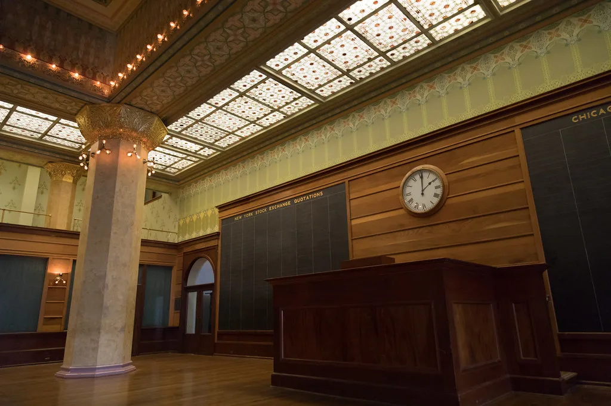
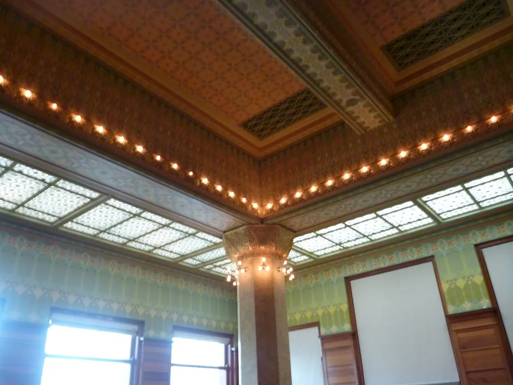

11일 코스피가 이틀 연속 오름세를 이어가며 4100선을 다시 찾았다. 한국거래소에 따르면 이날 코스피는 전 거래일보다 33.15포인트(0.81%) 오른 4106.39에 장을 마쳤다. 지수는 4124.30으로 출발해 오전 한때 4187.46까지 오르며 상승 폭을 키웠지만, 개인 투자자의 매도 물량이 늘어난 오후 들어 4066.58까지 밀리는 등 등락을 거듭하는 '널뛰기 장세'를 보인 뒤 다시 상승분을 지켜내며 마감했다.
수급 측면에서는 외국인과 기관이 동시에 순매수에 나서며 지수를 떠받쳤다. 외국인은 783억원, 기관은 2226억원 규모를 순매수한 반면 개인은 2820억원어치를 순매도하며 엇갈린 흐름을 보였다. 통상 외국인과 기관의 동반 매수가 유입될 때 지수가 안정적으로 오르는 경향이 있는데, 이날도 두 주체의 매수세가 장중 한때의 급락분을 상당 부분 되돌리는 버팀목 역할을 한 것으로 풀이된다.

이날 지수 상승을 이끈 두 축은 삼성전자와 SK하이닉스를 중심으로 한 반도체주 강세와 미국 연방정부 셧다운(일시 업무정지) 해제에 대한 기대감이었다. 지난달 중순 시작된 셧다운이 장기화하면서 미국의 주요 경제지표 발표가 줄줄이 미뤄졌고, 이로 인한 불확실성이 글로벌 증시 전반에 부담으로 작용해 왔다. 최근 미국 상원에서 중도파 의원들을 중심으로 임시 예산안에 찬성하는 분위기가 형성되면서 셧다운이 조만간 종료될 수 있다는 관측이 힘을 얻었고, 이는 국내 증시에도 투자심리 회복의 계기가 됐다.
코스피와 달리 코스닥은 같은 날 884.27로 마감하며 전 거래일보다 0.46% 내렸다. 대형 반도체주가 몰린 코스피와 중소형 성장주 비중이 큰 코스닥이 상반된 흐름을 보인 셈이다. 외국인 자금이 반도체 등 특정 대형주에 집중되면서 상대적으로 코스닥에서는 매수 유인이 약했던 것으로 분석된다. 외환시장에서는 원·달러 환율이 전일 종가 대비 11.9원 오른 1463.3원에 거래되며 최근 7개월 만에 가장 높은 수준을 기록해, 강달러 기조가 쉽게 꺾이지 않고 있음을 보여줬다.

다만 시장에서는 셧다운이 실제로 해제되더라도 안도 랠리가 오래가지 못할 수 있다는 신중론도 함께 나온다. 셧다운 기간 미뤄졌던 고용·물가 지표가 한꺼번에 공개되면 그 내용에 따라 미 연방준비제도의 금리 인하 속도에 대한 기대가 다시 흔들릴 수 있기 때문이다. 실제로 과거 셧다운이 종료된 국면에서도 지표 공백에 대한 우려와 금리 인하 기대 약화가 겹치며 증시가 다시 흔들린 전례가 있어, 이번에도 비슷한 패턴이 재연될지 주시할 필요가 있다는 지적이다.
반도체 업종에 대해서는 메모리 가격 상승과 수출 호조라는 우호적 환경이 이어지고 있지만, 밸류에이션 부담을 지적하는 목소리도 만만치 않다. 최근 반도체 업종의 12개월 선행 주가순자산비율(PBR)이 과거 반도체 슈퍼사이클 당시 최고 수준을 넘어섰다는 분석이 나오면서, 추가 상승을 위해서는 실적 개선이 이런 높은 기대치를 실제로 뒷받침해야 한다는 과제가 남아 있다.
증권가에서는 당분간 미국의 셧다운 관련 후속 조치와 그에 따른 경제지표 발표 일정, 그리고 국내 반도체 기업들의 실적 전망 조정이 코스피 방향성을 좌우할 핵심 변수가 될 것으로 보고 있다. 외국인·기관의 매수세가 추세적으로 이어질지, 아니면 개인 매도 물량에 밀려 다시 변동성이 커질지가 다음 거래일부터 시장의 관전 포인트로 꼽힌다.